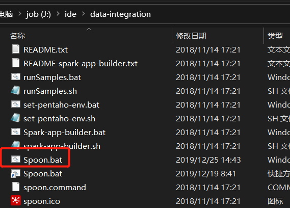

# 操作系统
# 软件依赖
- Jdk1.8~
- pentaho-8.3
# 实验环境
- Windows10
- Jdk-1.8
- postgres-12
- pentaho-8.3
# 目标表
- 版本号：每次更新的将增加 1
- 起始时间：数据起始的有效时间
- 截止时间：数据截止的有效时间
- 日期维 ID：自增 ID
- 日期：年 - 月 - 日格式的日期
- 年：年份
- 月：本年的月
- 日：本月的天
- 季度：本月的季度
版本号，起始时间与截止时间用于区分最新的的数据与历史记录
目标表将分为两种抽取方式，分别是全量抽取与增量抽取
# 全量抽取
一次性把所需要的时间维度抽到维度表里
- 打开 pentaho data integration 目录下的 spoon.bat
 - 新建一个转换
- 搜索栏搜索生成记录，并拖动到转换里

- 双击转换里的生成记录，并设置限制为 1，点击确定
- 搜索计算器，并拖到转换里。按住 shite 点一下生成记录，再点一下计算器把他们连起来
- 双击计算器，并设置如下
这一步是计算 2018-01-01 到 2020-01-01 的天数，后面就会生成 2018-01-01 到 2020-01-01 的时间维度，你也可以把时间成你想要的时间段 - 找到克隆行，拖到转换里，并与计算器连接起来
- 双击克隆行并配置如下
- 继续接一个计算器，用来计算年月日和季度
- 计算器 2 设置如下
- 然后输出到维度表
- 双击维度表，先新建一个数据库连接
- 配置好数据库连接的信息，测试通过后保存连接
- 配置目标表，维字段，代理关键字段，version 字段
- 配置好字段
因为时间维度表一般是不需要保留历史记录的，所以不会做成缓慢增长维，因此这里选择更新而不是插入 - 保存运行后就能看见已经生成了 2018-01-01 到 2020-01-01 的时间维度了

# 增量抽取
每次调度将把今天的日期维度抽到维度表里
- 首先设置获取系统信息组件
- 系统信息组件设置如下
- 连接一个计算器 3
- 计算器 3 的设置和全量抽取中的计算器 2 的设置一样
- 然后再输出到维度表，维度表设置参考全量抽取的设置
- 保存运行，可以看见只抽取了今天的时间维度
# 混合抽取
当时间维度表里没有数据的时候进行全量抽取，当时间维度表里有数据的时候进行增量抽取
- 去掉全量抽取的生成记录，新增加一个表输入
- 表输入设置如下
SELECT max(dim_date_id) DIMID
from(SELECT dim_date_id from dim_date
UNIONSELECT 0) temp
- 再增加一个过滤记录组件，把他们连起来
- 过滤记录设置如下
- 保存运行就能达到增量 + 全量抽取的效果了